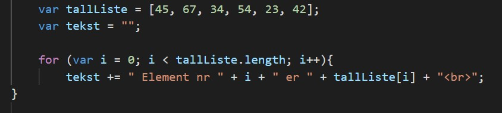
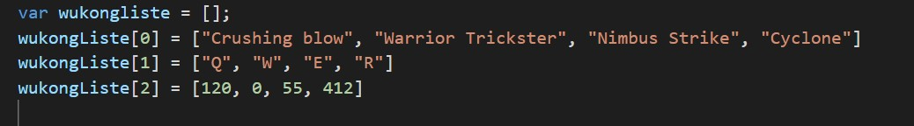
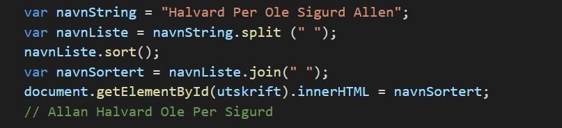

6-Arrayer
Her er en kort gjennomgang gjennom kapittel 6 i boka.
Her er en kort gjennomgang gjennom kapittel 6 i boka.
Array er rett og slett en måtte lagre flere verdier under det samme navnet. Vi kan starte med å sammenligne
arrayer og variabler. En variable vil da se ut wsoim bilde under. Det den gjør er at variabelen sum vil ha
verdien 5. Denne type variabel kan bare holde en verdi om gangen

Men med en arrayer kan vi variablen sum mer verdier. Da vil det se slikk ut!

Noen av fordelene arrayer kan ha er foreksempel vis et firma som monsternett skal sortere kundene sine i to som
eksempel de som har fiber og de som ikke har. Isteden for å skrive det som det her.
var Fkunde 1 = Per Karlsen;
var Fkunde 2 = Abdisalam Yarow;
var Kunde 1 = John Doe;
var Kunde 2 = Filip Strong;
osv.
Hadde det kanskje vært lettere å bruke array til sortere det og gjøre det letere å sette opp og få det til å se sånn
ut.
var fiberkundeListe = ["Per Karlsen", "Abdisalam Yarow"];
var KundeListe = ["John Doe", "Filip Strong"];
Array kan bli brukt i mange elementer som for eksempel en for-løkke. Med bruk av for-løkke kan vi skrive ut alle elementene i arrayen.
en kodesnutt vil se sånn ut

Arrayer har noen funskjoner som kan bli brukt til å manipulere på verdiene i orginale arrayen
som foreksempel.
splice(spliceindex, antall)- sletter antall elementer fra startindex. push(verdi)- legger til et element i slutten av arrayen og setter innholdet lik verdi. pop()- fjerner det siste elementet i arrayen og gir tilbake verdien som resultat
her er noen eksempler som viser hvordan de kan bli brukt.
var minArray = [3, 12, 24, 36, 48];
minArray.push(60)
minArray.splice(2, 12);
Flerdimemsjonale arrayer lar oss lage en array som inneholder andre arrays. Dette kan bli brukt til å lage verdier i tabelform.
En slikk array vil se sånn ut.

Assosiative arrayer er array som bruker navn isteden for den standard nummer eller indeksen. Med dette kan vi ha en samling av arrays med ulike verdier.
Du kan lage en assosiative array sånn her
var personinfo = {fornavn: "Yahye" etternavn: "Saleban" alder: "17"}
Tekststrenger kan sees på som en form for arrayer der hvert element er ett tegn og vi kan lett
konvertere mellom en verdi av typen string og en array. Ønsker vi foreksempel å sortere en Tekststreng,
kan vi konvertere den til en array også bruke sort-metoden.
